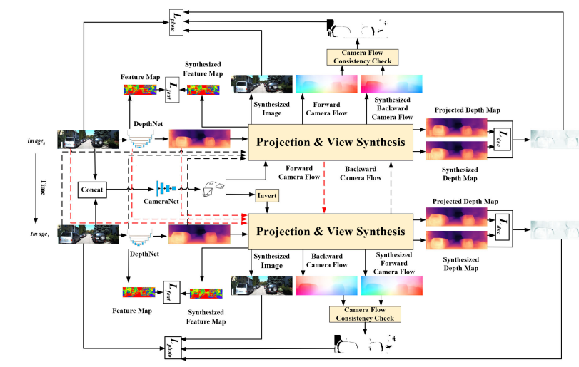
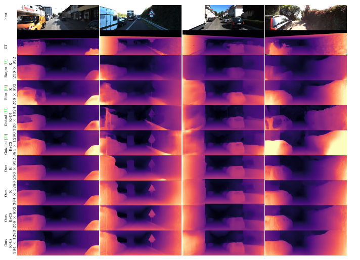
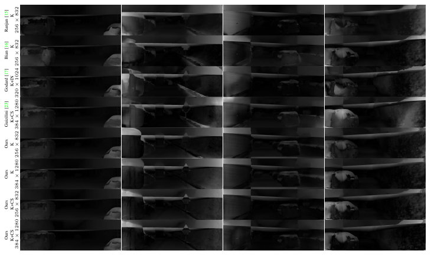
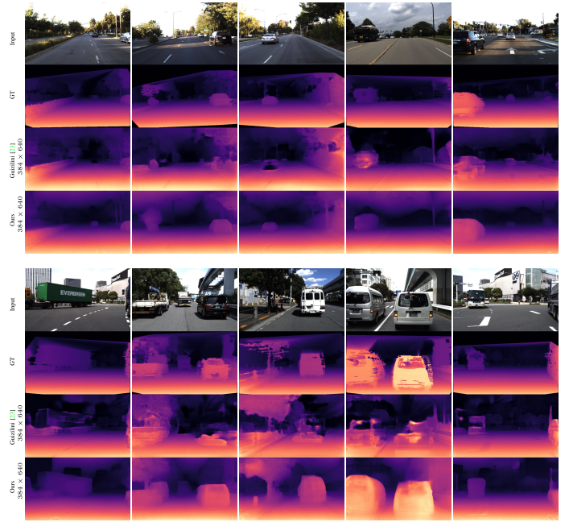
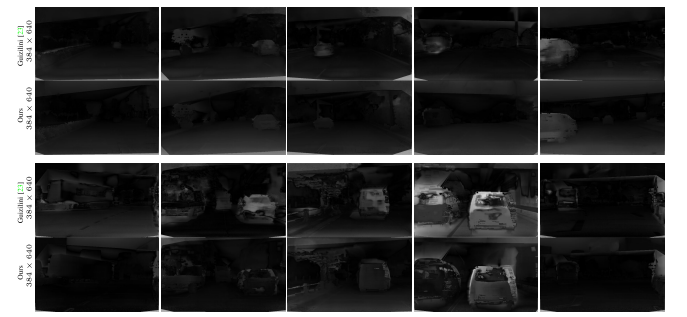
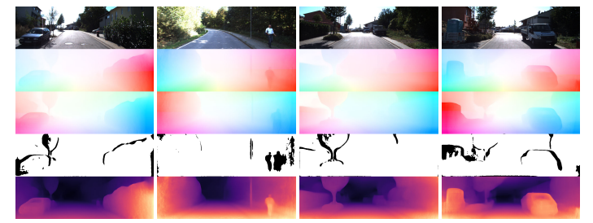
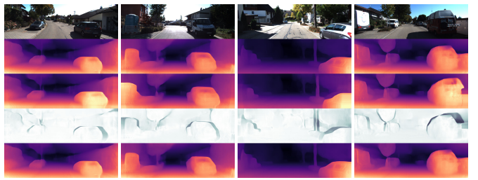
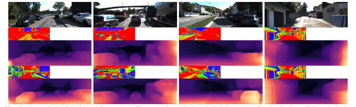
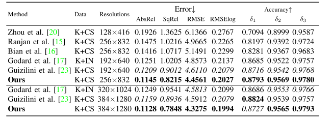
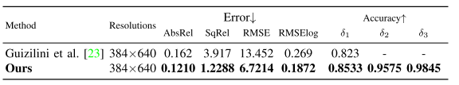

CbwLoss: Constrained Bidirectional Weighted Loss for Self-Supervised Learning of Depth and Pose
Fei Wang1,2,3, Jun Cheng1,3, Penglei Liu 1,2,3
1 Shenzhen Institute of Advanced Technology, Chinese Academy of Sciences; 2 University of Chinese Academy of Sciences;
3 The Chinese University of Hong Kong
Fei Wang1,2,3, Jun Cheng1,3, Penglei Liu 1,2,3
Abstract— Photometric differences are widely used as supervision signals to train neural networks for estimating depth and camera pose from unlabeled monocular videos. However, this approach is detrimental for model optimization because occlusions and moving objects in a scene violate the underlying static scenario assumption. In addition, pixels in textureless regions or less discriminative pixels hinder model training. To address these problems, in this paper, we deal with moving objects and occlusions by utilizing the differences between the flow fields, and the differences between the depth structure generated by affine transformation and view synthesis, respectively. Secondly, we mitigate the effect of textureless regions on model optimization by measuring the differences between features with more semantic and contextual information without requiring additional networks. In addition, although the bidirectionality component is used in each sub-objective function, a pair of images is reasoned about only once, which helps reduce overhead. Extensive experiments and visual analysis demonstrate the effectiveness of the proposed method, which outperforms existing state-of-the-art self-supervised methods under the same conditions and without introducing additional auxiliary information.

Diagram of the general framework
Results

Qualitative comparison of example results of our proposed self-supervised monocular depth estimation method with those of previous state-of-the-art methods as estimated on the KITTI dataset. The ground truth maps were obtained from sparse laser data for visualization only. The brighter an area in a depth map is, the closer it is to the camera.

Comparison of error maps between different methods on the KITTI dataset

Qualitative comparison of example results of our proposed self-supervised monocular depth estimation method with those of previous state-of-the-art methods as estimated on the DDAD dataset.

Comparison of error maps between different methods on the DDAD dataset.

Visualization analysis of the camera flow occlusion masks. From top to bottom are the original images, the forward camera flows generated from the projection transformation of the reference images to the target images, the backward camera flows synthesized using the differentiable bilinear sampling mechanism, the bidirectional camera flow occlusion masks obtained by checking the consistency of the above two flows, and the estimated depth maps, respectively.

Visualization analysis of the adaptive weights. From top to bottom are the original images, the depth maps obtained through projection transformation, the depth maps obtained through view synthesis, the adaptive weights obtained by comparing the above two depth maps, and the estimated depth maps, respectively.

Visualization analysis of the learned feature maps. Here, we select only the principal feature map for visualization utilizing principal component analysis. From top to bottom are the original images, the feature maps without the bidirectional feature perception loss, the depth maps without the bidirectional
feature perception loss, the feature maps with the bidirectional feature perception loss, and the depth maps with the bidirectional feature perception loss, respectively

Comparison of performance for monocular depth estimation on the 282 images selected from 697 images in accordance with eigen’s testing split. (272 images with moving objects and 10 images in which most areas are textureless)

Comparison of performance for monocular depth estimation on the DDAD dataset
Downloads
Fei Wang, Jun Cheng and Penglei Liu. CbwLoss: Constrained Bidirectional Weighted Loss for Self-Supervised Learning of Depth and Pose [J]. IEEE Transactions on Intelligent Transportation Systems (TITS), vol. 24, no. 6, pp. 5803-5821, June 2023.
 Paper
Paper